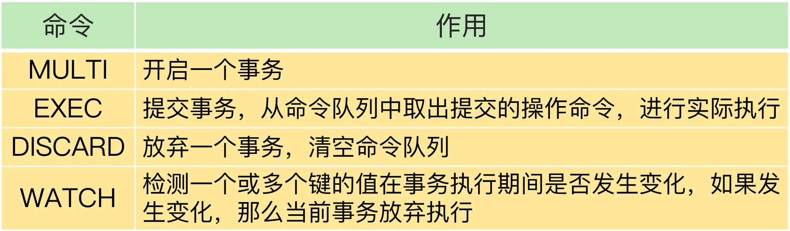

- 00 开篇词 这样学Redis，才能技高一筹.md
- 01 基本架构：一个键值数据库包含什么？.md
- 02 数据结构：快速的Redis有哪些慢操作？.md
- 03 高性能IO模型：为什么单线程Redis能那么快？.md
- 04 AOF日志：宕机了，Redis如何避免数据丢失？.md
- 05 内存快照：宕机后，Redis如何实现快速恢复？.md
- 06 数据同步：主从库如何实现数据一致？.md
- 07 哨兵机制：主库挂了，如何不间断服务？.md
- 08 哨兵集群：哨兵挂了，主从库还能切换吗？.md
- 09 切片集群：数据增多了，是该加内存还是加实例？.md
- 10 第1～9讲课后思考题答案及常见问题答疑.md
- 11 “万金油”的String，为什么不好用了？.md
- 12 有一亿个keys要统计，应该用哪种集合？.md
- 13 GEO是什么？还可以定义新的数据类型吗？.md
- 14 如何在Redis中保存时间序列数据？.md
- 15 消息队列的考验：Redis有哪些解决方案？.md
- 16 异步机制：如何避免单线程模型的阻塞？.md
- 17 为什么CPU结构也会影响Redis的性能？.md
- 18 波动的响应延迟：如何应对变慢的Redis？（上）.md
- 19 波动的响应延迟：如何应对变慢的Redis？（下）.md
- 20 删除数据后，为什么内存占用率还是很高？.md
- 21 缓冲区：一个可能引发“惨案”的地方.md
- 22 第11～21讲课后思考题答案及常见问题答疑.md
- 23 旁路缓存：Redis是如何工作的？.md
- 24 替换策略：缓存满了怎么办？.md
- 25 缓存异常（上）：如何解决缓存和数据库的数据不一致问题？.md
- 26 缓存异常（下）：如何解决缓存雪崩、击穿、穿透难题？.md
- 27 缓存被污染了，该怎么办？.md
- 28 Pika：如何基于SSD实现大容量Redis？.md
- 29 无锁的原子操作：Redis如何应对并发访问？.md
- 30 如何使用Redis实现分布式锁？.md
- 31 事务机制：Redis能实现ACID属性吗？.md
- 32 Redis主从同步与故障切换，有哪些坑？.md
- 33 脑裂：一次奇怪的数据丢失.md
- 34 第23~33讲课后思考题答案及常见问题答疑.md
- 35 Codis VS Redis Cluster：我该选择哪一个集群方案？.md
- 36 Redis支撑秒杀场景的关键技术和实践都有哪些？.md
- 37 数据分布优化：如何应对数据倾斜？.md
- 38 通信开销：限制Redis Cluster规模的关键因素.md
- 39 Redis 6.0的新特性：多线程、客户端缓存与安全.md
- 40 Redis的下一步：基于NVM内存的实践.md
- 41 第35～40讲课后思考题答案及常见问题答疑.md
- 加餐 01 经典的Redis学习资料有哪些？.md
- 加餐 02 用户Kaito：我是如何学习Redis的？.md
- 加餐 03 用户Kaito：我希望成为在压力中成长的人.md
- 加餐 04 Redis客户端如何与服务器端交换命令和数据？.md
- 加餐 05 Redis有哪些好用的运维工具？.md
- 加餐 06 Redis的使用规范小建议.md
- 加餐 07 从微博的Redis实践中，我们可以学到哪些经验？.md
- 结束语 从学习Redis到向Redis学习.md
31 事务机制：Redis能实现ACID属性吗？
事务是数据库的一个重要功能。所谓的事务，就是指对数据进行读写的一系列操作。事务在执行时，会提供专门的属性保证，包括原子性（Atomicity）、一致性（Consistency）、隔离性（Isolation）和持久性（Durability），也就是 ACID 属性。这些属性既包括了对事务执行结果的要求，也有对数据库在事务执行前后的数据状态变化的要求。
那么，Redis 可以完全保证 ACID 属性吗？毕竟，如果有些属性在一些场景下不能保证的话，很可能会导致数据出错，所以，我们必须要掌握 Redis 对这些属性的支持情况，并且提前准备应对策略。
接下来，我们就先了解 ACID 属性对事务执行的具体要求，有了这个知识基础后，我们才能准确地判断 Redis 的事务机制能否保证 ACID 属性。
事务 ACID 属性的要求
首先来看原子性。原子性的要求很明确，就是一个事务中的多个操作必须都完成，或者都不完成。业务应用使用事务时，原子性也是最被看重的一个属性。
我给你举个例子。假如用户在一个订单中购买了两个商品 A 和 B，那么，数据库就需要把这两个商品的库存都进行扣减。如果只扣减了一个商品的库存，那么，这个订单完成后，另一个商品的库存肯定就错了。
第二个属性是一致性。这个很容易理解，就是指数据库中的数据在事务执行前后是一致的。
第三个属性是隔离性。它要求数据库在执行一个事务时，其它操作无法存取到正在执行事务访问的数据。
我还是借助用户下单的例子给你解释下。假设商品 A 和 B 的现有库存分别是 5 和 10，用户 X 对 A、B 下单的数量分别是 3、6。如果事务不具备隔离性，在用户 X 下单事务执行的过程中，用户 Y 一下子也购买了 5 件 B，这和 X 购买的 6 件 B 累加后，就超过 B 的总库存值了，这就不符合业务要求了。
最后一个属性是持久性。数据库执行事务后，数据的修改要被持久化保存下来。当数据库重启后，数据的值需要是被修改后的值。
了解了 ACID 属性的具体要求后，我们再来看下 Redis 是如何实现事务机制的。
Redis 如何实现事务？
事务的执行过程包含三个步骤，Redis 提供了 MULTI、EXEC 两个命令来完成这三个步骤。下面我们来分析下。
第一步，客户端要使用一个命令显式地表示一个事务的开启。在 Redis 中，这个命令就是 MULTI。
第二步，客户端把事务中本身要执行的具体操作（例如增删改数据）发送给服务器端。这些操作就是 Redis 本身提供的数据读写命令，例如 GET、SET 等。不过，这些命令虽然被客户端发送到了服务器端，但 Redis 实例只是把这些命令暂存到一个命令队列中，并不会立即执行。
第三步，客户端向服务器端发送提交事务的命令，让数据库实际执行第二步中发送的具体操作。Redis 提供的 EXEC 命令就是执行事务提交的。当服务器端收到 EXEC 命令后，才会实际执行命令队列中的所有命令。
下面的代码就显示了使用 MULTI 和 EXEC 执行一个事务的过程，你可以看下。
#开启事务
127.0.0.1:6379> MULTI
OK
#将a:stock减1，
127.0.0.1:6379> DECR a:stock
QUEUED
#将b:stock减1
127.0.0.1:6379> DECR b:stock
QUEUED
#实际执行事务
127.0.0.1:6379> EXEC
1) (integer) 4
2) (integer) 9
我们假设 a:stock、b:stock 两个键的初始值是 5 和 10。在 MULTI 命令后执行的两个 DECR 命令，是把 a:stock、b:stock 两个键的值分别减 1，它们执行后的返回结果都是 QUEUED，这就表示，这些操作都被暂存到了命令队列，还没有实际执行。等到执行了 EXEC 命令后，可以看到返回了 4、9，这就表明，两个 DECR 命令已经成功地执行了。
好了，通过使用 MULTI 和 EXEC 命令，我们可以实现多个操作的共同执行，但是这符合事务要求的 ACID 属性吗？接下来，我们就来具体分析下。
Redis 的事务机制能保证哪些属性？
原子性是事务操作最重要的一个属性，所以，我们先来分析下 Redis 事务机制能否保证原子性。
原子性
如果事务正常执行，没有发生任何错误，那么，MULTI 和 EXEC 配合使用，就可以保证多个操作都完成。但是，如果事务执行发生错误了，原子性还能保证吗？我们需要分三种情况来看。
第一种情况是，在执行 EXEC 命令前，客户端发送的操作命令本身就有错误（比如语法错误，使用了不存在的命令），在命令入队时就被 Redis 实例判断出来了。
对于这种情况，在命令入队时，Redis 就会报错并且记录下这个错误。此时，我们还能继续提交命令操作。等到执行了 EXEC 命令之后，Redis 就会拒绝执行所有提交的命令操作，返回事务失败的结果。这样一来，事务中的所有命令都不会再被执行了，保证了原子性。
我们来看一个因为事务操作入队时发生错误，而导致事务失败的小例子。
#开启事务
127.0.0.1:6379> MULTI
OK
#发送事务中的第一个操作，但是Redis不支持该命令，返回报错信息
127.0.0.1:6379> PUT a:stock 5
(error) ERR unknown command `PUT`, with args beginning with: `a:stock`, `5`,
#发送事务中的第二个操作，这个操作是正确的命令，Redis把该命令入队
127.0.0.1:6379> DECR b:stock
QUEUED
#实际执行事务，但是之前命令有错误，所以Redis拒绝执行
127.0.0.1:6379> EXEC
(error) EXECABORT Transaction discarded because of previous errors.
在这个例子中，事务里包含了一个 Redis 本身就不支持的 PUT 命令，所以，在 PUT 命令入队时，Redis 就报错了。虽然，事务里还有一个正确的 DECR 命令，但是，在最后执行 EXEC 命令后，整个事务被放弃执行了。
我们再来看第二种情况。
和第一种情况不同的是，**事务操作入队时，命令和操作的数据类型不匹配，但 Redis 实例没有检查出错误。**但是，在执行完 EXEC 命令以后，Redis 实际执行这些事务操作时，就会报错。不过，需要注意的是，虽然 Redis 会对错误命令报错，但还是会把正确的命令执行完。在这种情况下，事务的原子性就无法得到保证了。
举个小例子。事务中的 LPOP 命令对 String 类型数据进行操作，入队时没有报错，但是，在 EXEC 执行时报错了。LPOP 命令本身没有执行成功，但是事务中的 DECR 命令却成功执行了。
#开启事务
127.0.0.1:6379> MULTI
OK
#发送事务中的第一个操作，LPOP命令操作的数据类型不匹配，此时并不报错
127.0.0.1:6379> LPOP a:stock
QUEUED
#发送事务中的第二个操作
127.0.0.1:6379> DECR b:stock
QUEUED
#实际执行事务，事务第一个操作执行报错
127.0.0.1:6379> EXEC
1) (error) WRONGTYPE Operation against a key holding the wrong kind of value
2) (integer) 8
看到这里，你可能有个疑问，传统数据库（例如 MySQL）在执行事务时，会提供回滚机制，当事务执行发生错误时，事务中的所有操作都会撤销，已经修改的数据也会被恢复到事务执行前的状态，那么，在刚才的例子中，如果命令实际执行时报错了，是不是可以用回滚机制恢复原来的数据呢？
其实，Redis 中并没有提供回滚机制。虽然 Redis 提供了 DISCARD 命令，但是，这个命令只能用来主动放弃事务执行，把暂存的命令队列清空，起不到回滚的效果。
DISCARD 命令具体怎么用呢？我们来看下下面的代码。
#读取a:stock的值4
127.0.0.1:6379> GET a:stock
"4"
#开启事务
127.0.0.1:6379> MULTI
OK
#发送事务的第一个操作，对a:stock减1
127.0.0.1:6379> DECR a:stock
QUEUED
#执行DISCARD命令，主动放弃事务
127.0.0.1:6379> DISCARD
OK
#再次读取a:stock的值，值没有被修改
127.0.0.1:6379> GET a:stock
"4"
这个例子中，a:stock 键的值一开始为 4，然后，我们执行一个事务，想对 a:stock 的值减 1。但是，在事务的最后，我们执行的是 DISCARD 命令，所以事务就被放弃了。我们再次查看 a:stock 的值，会发现仍然为 4。
最后，我们再来看下第三种情况：在执行事务的 EXEC 命令时，Redis 实例发生了故障，导致事务执行失败。
在这种情况下，如果 Redis 开启了 AOF 日志，那么，只会有部分的事务操作被记录到 AOF 日志中。我们需要使用 redis-check-aof 工具检查 AOF 日志文件，这个工具可以把未完成的事务操作从 AOF 文件中去除。这样一来，我们使用 AOF 恢复实例后，事务操作不会再被执行，从而保证了原子性。
当然，如果 AOF 日志并没有开启，那么实例重启后，数据也都没法恢复了，此时，也就谈不上原子性了。
好了，到这里，你了解了 Redis 对事务原子性属性的保证情况，我们来简单小结下：
- 命令入队时就报错，会放弃事务执行，保证原子性；
- 命令入队时没报错，实际执行时报错，不保证原子性；
- EXEC 命令执行时实例故障，如果开启了 AOF 日志，可以保证原子性。
接下来，我们再来学习下一致性属性的保证情况。
一致性
事务的一致性保证会受到错误命令、实例故障的影响。所以，我们按照命令出错和实例故障的发生时机，分成三种情况来看。
情况一：命令入队时就报错
在这种情况下，事务本身就会被放弃执行，所以可以保证数据库的一致性。
情况二：命令入队时没报错，实际执行时报错
在这种情况下，有错误的命令不会被执行，正确的命令可以正常执行，也不会改变数据库的一致性。
情况三：EXEC 命令执行时实例发生故障
在这种情况下，实例故障后会进行重启，这就和数据恢复的方式有关了，我们要根据实例是否开启了 RDB 或 AOF 来分情况讨论下。
如果我们没有开启 RDB 或 AOF，那么，实例故障重启后，数据都没有了，数据库是一致的。
如果我们使用了 RDB 快照，因为 RDB 快照不会在事务执行时执行，所以，事务命令操作的结果不会被保存到 RDB 快照中，使用 RDB 快照进行恢复时，数据库里的数据也是一致的。
如果我们使用了 AOF 日志，而事务操作还没有被记录到 AOF 日志时，实例就发生了故障，那么，使用 AOF 日志恢复的数据库数据是一致的。如果只有部分操作被记录到了 AOF 日志，我们可以使用 redis-check-aof 清除事务中已经完成的操作，数据库恢复后也是一致的。
所以，总结来说，在命令执行错误或 Redis 发生故障的情况下，Redis 事务机制对一致性属性是有保证的。接下来，我们再继续分析下隔离性。
隔离性
事务的隔离性保证，会受到和事务一起执行的并发操作的影响。而事务执行又可以分成命令入队（EXEC 命令执行前）和命令实际执行（EXEC 命令执行后）两个阶段，所以，我们就针对这两个阶段，分成两种情况来分析：
- 并发操作在 EXEC 命令前执行，此时，隔离性的保证要使用 WATCH 机制来实现，否则隔离性无法保证；
- 并发操作在 EXEC 命令后执行，此时，隔离性可以保证。
我们先来看第一种情况。一个事务的 EXEC 命令还没有执行时，事务的命令操作是暂存在命令队列中的。此时，如果有其它的并发操作，我们就需要看事务是否使用了 WATCH 机制。
WATCH 机制的作用是，在事务执行前，监控一个或多个键的值变化情况，当事务调用 EXEC 命令执行时，WATCH 机制会先检查监控的键是否被其它客户端修改了。如果修改了，就放弃事务执行，避免事务的隔离性被破坏。然后，客户端可以再次执行事务，此时，如果没有并发修改事务数据的操作了，事务就能正常执行，隔离性也得到了保证。
WATCH 机制的具体实现是由 WATCH 命令实现的，我给你举个例子，你可以看下下面的图，进一步理解下 WATCH 命令的使用。
我来给你具体解释下图中的内容。
在 t1 时，客户端 X 向实例发送了 WATCH 命令。实例收到 WATCH 命令后，开始监测 a:stock 的值的变化情况。
紧接着，在 t2 时，客户端 X 把 MULTI 命令和 DECR 命令发送给实例，实例把 DECR 命令暂存入命令队列。
在 t3 时，客户端 Y 也给实例发送了一个 DECR 命令，要修改 a:stock 的值，实例收到命令后就直接执行了。
等到 t4 时，实例收到客户端 X 发送的 EXEC 命令，但是，实例的 WATCH 机制发现 a:stock 已经被修改了，就会放弃事务执行。这样一来，事务的隔离性就可以得到保证了。
当然，如果没有使用 WATCH 机制，在 EXEC 命令前执行的并发操作是会对数据进行读写的。而且，在执行 EXEC 命令的时候，事务要操作的数据已经改变了，在这种情况下，Redis 并没有做到让事务对其它操作隔离，隔离性也就没有得到保障。下面这张图显示了没有 WATCH 机制时的情况，你可以看下。
在 t2 时刻，客户端 X 发送的 EXEC 命令还没有执行，但是客户端 Y 的 DECR 命令就执行了，此时，a:stock 的值会被修改，这就无法保证 X 发起的事务的隔离性了。
刚刚说的是并发操作在 EXEC 命令前执行的情况，下面我再来说一说第二种情况：并发操作在 EXEC 命令之后被服务器端接收并执行。
因为 Redis 是用单线程执行命令，而且，EXEC 命令执行后，Redis 会保证先把命令队列中的所有命令执行完。所以，在这种情况下，并发操作不会破坏事务的隔离性，如下图所示：
最后，我们来分析一下 Redis 事务的持久性属性保证情况。
持久性
因为 Redis 是内存数据库，所以，数据是否持久化保存完全取决于 Redis 的持久化配置模式。
如果 Redis 没有使用 RDB 或 AOF，那么事务的持久化属性肯定得不到保证。如果 Redis 使用了 RDB 模式，那么，在一个事务执行后，而下一次的 RDB 快照还未执行前，如果发生了实例宕机，这种情况下，事务修改的数据也是不能保证持久化的。
如果 Redis 采用了 AOF 模式，因为 AOF 模式的三种配置选项 no、everysec 和 always 都会存在数据丢失的情况，所以，事务的持久性属性也还是得不到保证。
所以，不管 Redis 采用什么持久化模式，事务的持久性属性是得不到保证的。
小结
在这节课上，我们学习了 Redis 中的事务实现。Redis 通过 MULTI、EXEC、DISCARD 和 WATCH 四个命令来支持事务机制，这 4 个命令的作用，我总结在下面的表中，你可以再看下。

事务的 ACID 属性是我们使用事务进行正确操作的基本要求。通过这节课的分析，我们了解到了，Redis 的事务机制可以保证一致性和隔离性，但是无法保证持久性。不过，因为 Redis 本身是内存数据库，持久性并不是一个必须的属性，我们更加关注的还是原子性、一致性和隔离性这三个属性。
原子性的情况比较复杂，只有当事务中使用的命令语法有误时，原子性得不到保证，在其它情况下，事务都可以原子性执行。
所以，我给你一个小建议：**严格按照 Redis 的命令规范进行程序开发，并且通过 code review 确保命令的正确性。**这样一来，Redis 的事务机制就能被应用在实践中，保证多操作的正确执行。
每课一问
按照惯例，我给你提个小问题，在执行事务时，如果 Redis 实例发生故障，而 Redis 使用了 RDB 机制，那么，事务的原子性还能得到保证吗？
欢迎在留言区写下你的思考和答案，我们一起交流讨论。如果你觉得今天的内容对你有所帮助，也欢迎你分享给你的朋友或同事。我们下节课见。
© 2019 - 2023 Liangliang Lee. Powered by Vert.x and hexo-theme-book.